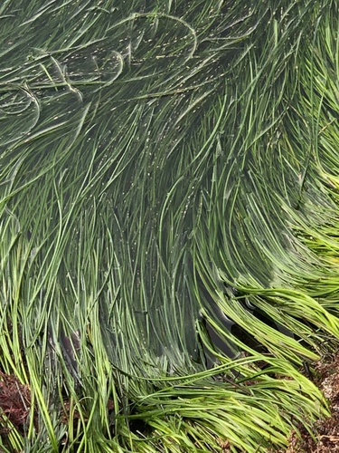

Zosteraceae
Eelgrass Family
Zosteraceae is a family of marine monocotyledonous flowering plants, commonly known as eelgrasses. These fully submerged seagrasses grow from rhizomes, forming extensive underwater meadows in temperate and subtropical coastal waters worldwide. They possess long, ribbon-like leaves and highly reduced, unisexual flowers borne on a flattened spike (spadix) enclosed within a leaf sheath (spathe). Pollination occurs underwater via unique thread-like pollen.
Overview
The Zosteraceae family includes 2-3 genera (primarily Zostera and Phyllospadix) and about 18-22 species of true seagrasses – flowering plants that live entirely submerged in marine environments. They are found along temperate and subtropical coastlines in both the Northern and Southern Hemispheres, typically in shallow bays, estuaries, and coastal waters with soft sediments (Zostera) or on rocky shores (Phyllospadix).
Eelgrasses are ecologically critical foundation species, forming extensive underwater meadows that provide vital habitat, nursery grounds, and food sources for a vast array of marine life, including fish, invertebrates, waterfowl, and marine mammals like manatees and dugongs. They also play crucial roles in stabilizing sediments, improving water clarity, and sequestering carbon ("blue carbon").
Zosteraceae represent one of the few angiosperm lineages to have successfully colonized the marine environment. Their adaptations include tolerance to salinity, underwater pollination (hydrophily) with specialized thread-like pollen, ribbon-like leaves lacking stomata that absorb nutrients directly from the water, and extensive rhizome systems for anchorage and vegetative spread. Seagrass meadows worldwide are facing threats from coastal development, pollution, dredging, disease, and climate change.
Quick Facts
- Scientific Name: Zosteraceae
- Common Name: Eelgrass family
- Number of Genera: Approximately 2-3
- Number of Species: Approximately 18-22
- Distribution: Temperate and subtropical marine coastlines worldwide (absent from Antarctic waters).
- Evolutionary Group: Monocots - Order Alismatales
Key Characteristics
Growth Form and Habit
Perennial, submerged marine herbs (seagrasses). Extensive vegetative growth occurs via creeping, branched rhizomes that anchor the plant in sediment or attach to rocks (Phyllospadix). Erect shoots bearing leaves arise from the rhizomes, often forming dense meadows.
Leaves
Leaves are alternate and arranged in two ranks (distichous) on upright stems. They are typically long, linear, and ribbon-like, with a distinct sheathing base that encloses the stem. Leaf tips can be rounded, notched, or pointed, which can be useful for identification. Venation is parallel. Leaves contain air channels (aerenchyma) for buoyancy and gas transport, and lack stomata as gas exchange occurs directly with the water.
Inflorescence
Flowers are borne on a distinctive flattened, spike-like axis called a spadix (though structurally different from the spadix in Araceae). This spadix, bearing rows of flowers, is enclosed within a modified leaf sheath known as a spathe. The entire structure (spadix + spathe) is often referred to as a spatheate spike or rhipidium and is typically borne on a specialized reproductive shoot.
Flowers
Flowers are highly reduced, unisexual, and lack a typical perianth (sepals/petals). Plants can be monoecious (both sexes on the same plant, e.g., Zostera) or dioecious (separate male and female plants, e.g., Phyllospadix).
- Male Flowers: Consist essentially of a single stamen, which has two pollen sacs (thecae). They release distinctive thread-like (filiform) pollen grains, adapted to drift in water currents.
- Female Flowers: Consist of a single carpel forming a superior ovary with one locule containing a single, pendulous ovule. The style is usually divided into two long, thread-like stigmas adapted to capture drifting pollen from the water.
- Retinacula: Small, flap-like or scale-like bracts (retinacula) are often associated with the flowers on the spadix, possibly aiding in protection or pollen release/capture.
Pollination and Fruits
Pollination is specialized for underwater conditions (hydrophily). Thread-like pollen is released into the water column and drifts with currents until it contacts the long, receptive stigmas of female flowers. This process often occurs near the water surface or entirely submerged.
The fruit is small, developing within the spathe. It is typically an achene (a dry, one-seeded fruit where the seed coat is not fused to the fruit wall) or a utricle (similar, but with a thin, bladder-like wall). Some descriptions refer to it as drupe-like due to fleshy outer layers in some species. Seeds lack endosperm; the embryo is surrounded by nutritive tissue from the nucellus.
Chemical Characteristics
Possess physiological adaptations for survival in saline marine environments, including mechanisms for osmoregulation. Contain phenolic compounds, such as caffeic acid derivatives, which may play roles in defense or allelopathy.
Field Identification
Identifying Zosteraceae involves recognizing their seagrass habit, ribbon-like leaves, rhizomatous growth, and specific marine environments. Flower/fruit details often require close examination.
Primary Identification Features
- Habit: Fully submerged marine seagrass.
- Growth Form: Rhizomatous, forming meadows or clumps.
- Leaves: Linear, ribbon-like, alternate in two ranks, with sheathing bases.
- Reproductive Structures: Flowers highly reduced, borne on a flattened spadix enclosed within a spathe (spatheate spike).
- Habitat: Shallow coastal marine waters (temperate/subtropical).
Secondary Identification Features
- Leaf Tips: Shape (rounded, notched, etc.) can distinguish species/genera.
- Rhizome characteristics: Thickness, color, branching pattern.
- Habitat Specificity: Soft sediments (Zostera) vs. rocky substrates (Phyllospadix).
- Monoecious vs. Dioecious: Requires finding reproductive structures.
Seasonal Identification Tips
- Growing Season: Active leaf growth and meadow expansion typically occur in warmer months.
- Reproductive Season: Flowering and fruiting are seasonal, varying by location but often in spring/summer. Spathes containing spadices are the most visible reproductive sign.
- Winter: Meadows may become sparser or leaves may shorten in colder temperate regions, but rhizomes persist.
Common Confusion Points
Zosteraceae can be confused with other seagrasses or marine organisms:
- Other Seagrass Families (Alismatales):
- Posidoniaceae (Posidonia): Often larger, robust seagrasses; leaf sheath fibers often form persistent balls ('egagropili'); different flower/inflorescence structure. Mediterranean, Australia.
- Cymodoceaceae (Manatee Grass, Shoal Grass): Diverse group; leaves often cylindrical (Syringodium) or flat with different tip shapes (Cymodocea, Halodule); different flower/fruit details. Mostly tropical/subtropical.
- Hydrocharitaceae (includes Halophila, Thalassia): Very diverse family including freshwater and marine species; seagrass members (Halophila, Thalassia, Enhalus) have different leaf shapes (oval, strap-like but different base) and flower structures (often 3-merous perianth parts present).
- Ruppiaceae (Ruppia - Widgeon Grass): Found in brackish or saline waters (less commonly fully marine); very slender leaves; flowers tiny, paired, with long coiled stalks after fertilization; different family/order debated, often near Potamogetonaceae.
- Algae (Seaweeds): Lack true roots, rhizomes, stems, leaves, flowers, and fruits. Structure is simpler (thallus), may be filamentous, sheet-like, or branched but without vascular tissue or the distinct organization of seagrasses.
The combination of ribbon-like leaves arising from a rhizome, the specific spatheate spike inflorescence, and the temperate/subtropical marine distribution helps distinguish Zosteraceae.
Field Guide Quick Reference
Look For:
- Submerged marine seagrass
- Rhizomes forming meadows/clumps
- Ribbon-like leaves, sheathing base
- Flowers hidden in spathe/spadix
- Temperate/subtropical coasts
Key Variations:
- Leaf width and tip shape
- Habitat (sand/mud vs. rock)
- Plant size
- Monoecious vs. Dioecious
Notable Examples
Includes widespread and ecologically vital seagrass species.

Zostera marina
Common Eelgrass
The most widespread species, found in temperate waters of the North Atlantic and North Pacific. Forms extensive meadows in shallow, sandy or muddy bays and estuaries. Leaves are long and ribbon-like (typically 3-12 mm wide) with rounded tips. Monoecious. Critically important habitat-forming species.

Phyllospadix spp.
Surfgrass
A genus (~5 species) adapted to high-energy, rocky intertidal and subtidal zones along the North Pacific coast. Leaves are typically narrower and wirier than Zostera. Rhizomes are adapted to cling tightly to rocks. Plants are dioecious. Important habitat on exposed coastlines.

Zostera noltei (syn. Nanozostera noltei)
Dwarf Eelgrass
A smaller species found in the Eastern Atlantic, Mediterranean, and Black Seas. Typically grows higher in the intertidal zone than Z. marina, often on mudflats. Leaves are much narrower (0.5-2 mm wide) and often have notched tips. Monoecious. Important food source for waterfowl.
Phylogeny and Classification
Zosteraceae is a family of monocots belonging to the order Alismatales. This order represents an early diverging lineage within the monocots and is notable for containing a high proportion of aquatic and wetland plants, including all true seagrass families.
Within Alismatales, Zosteraceae is part of the core aquatic clade. Molecular studies indicate a close relationship with Potamogetonaceae (Pondweed family), another family of mostly submerged aquatic plants (primarily freshwater, but some brackish). Ruppiaceae (Widgeon Grass family) is also often considered closely related, though its exact position and familial status are sometimes debated. Zosteraceae is distinct from the other seagrass families (Posidoniaceae, Cymodoceaceae, Hydrocharitaceae), which represent separate evolutionary transitions to the marine environment within Alismatales.
Position in Plant Phylogeny
- Kingdom: Plantae
- Clade: Angiosperms (Flowering plants)
- Clade: Monocots
- Order: Alismatales
- Family: Zosteraceae
Evolutionary Significance
Zosteraceae holds significant evolutionary and ecological importance:
- Marine Angiosperms: Represents one of only a few independent evolutionary transitions of flowering plants back to a fully submerged marine existence.
- Adaptations to Marine Life: Exhibits remarkable adaptations for underwater survival, including salinity tolerance, underwater pollination (hydrophily) with specialized pollen, nutrient absorption through leaves, and lack of stomata.
- Ecological Engineers: As foundation species, eelgrass meadows fundamentally shape coastal ecosystems, providing habitat structure, enhancing biodiversity, improving water quality, and stabilizing sediments.
- Blue Carbon: Seagrass meadows are highly effective at sequestering and storing atmospheric carbon dioxide in marine sediments, playing a role in climate regulation.
- Alismatales Diversity: Contributes to understanding the diversification of aquatic lifestyles within the early-diverging monocot order Alismatales.